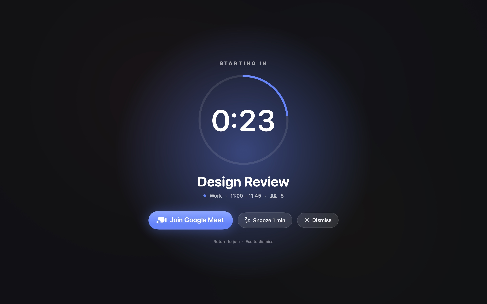
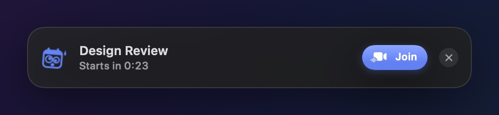
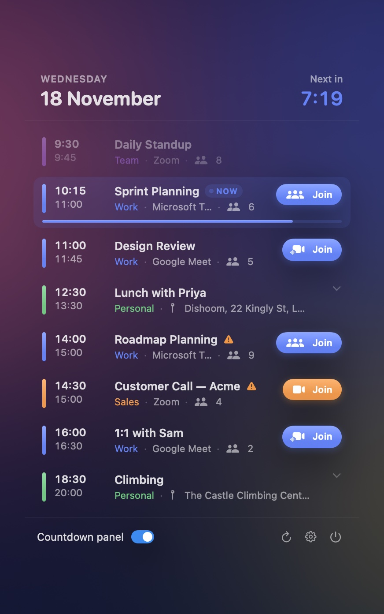
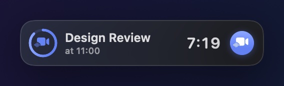
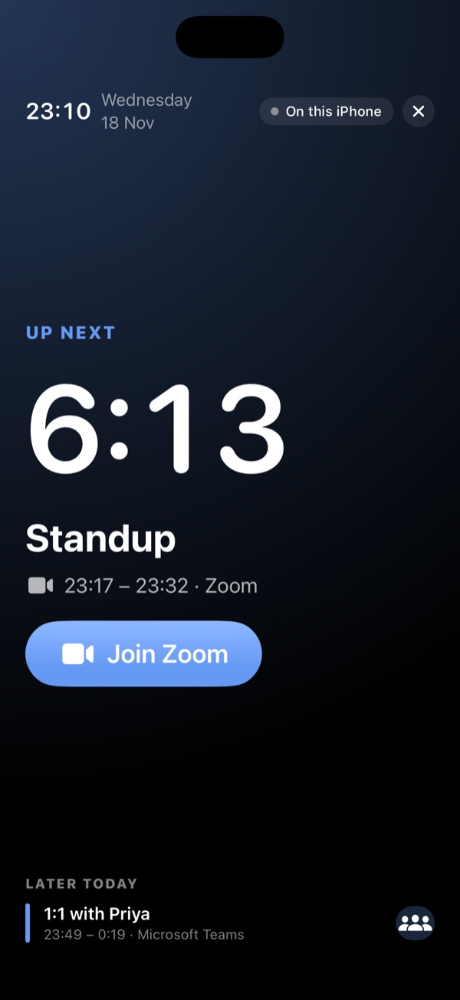
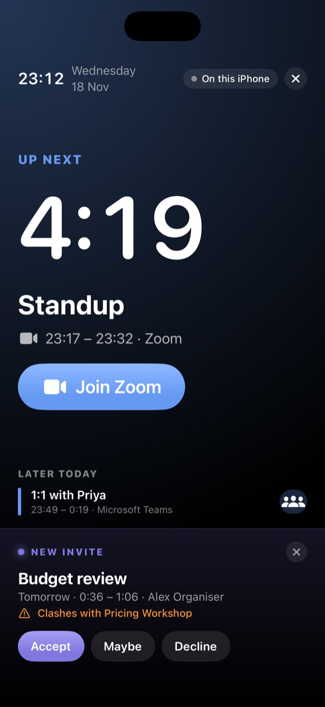
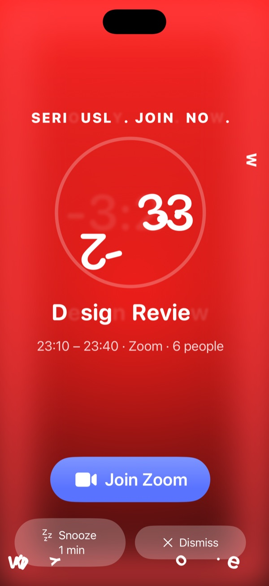
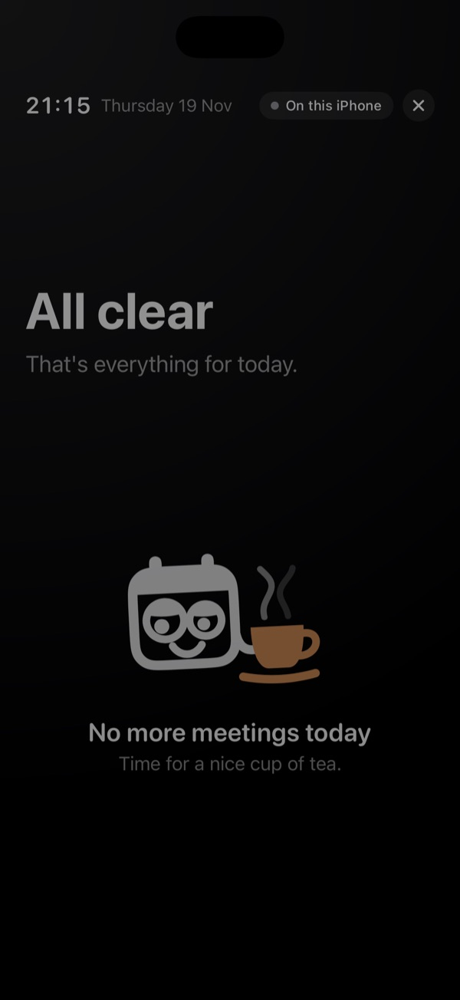
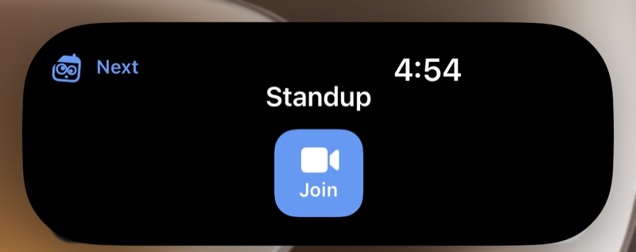
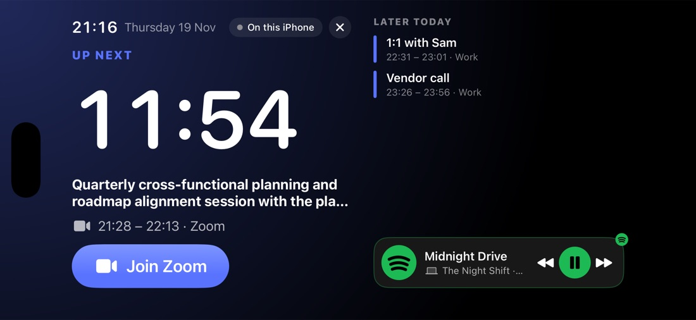

Cadence
Your calendar, gently panicking on your behalf. A tiny native macOS menu-bar app, with an iPhone desk companion, that makes sure you're never late for a meeting again.
In testing Built-in Google sign-in isn't open to everyone yet. What does this mean?
- macOS 14 Sonoma or later
- Apple silicon
- Signed & notarized by Apple
- Free
Released 23 Nov 2026Also as .zip (4.1 MB) · What's new · All versions


A full-screen nudge you can't miss
30 seconds before a meeting (configurable), Cadence covers every display with a countdown and a big Join button.
Return joins · Esc dismisses · Snooze nags you again a minute later.
Want more warning? Add an optional heads-up notification a few minutes before each meeting.
Ignore it and it gets upset
Once the meeting has started and you still haven't joined, the alert turns redder, pulses faster, flashes at the edges and starts to shake. The heading goes from Started to You're late to They're waiting for you.
Three minutes late, it falls apart: letters ping off the title and pile up at the bottom of the screen, and the countdown's digits rattle loose inside the ring, still counting. Reduce Motion keeps the colour and drops the theatrics.
Pick when an ignored alert gives up and closes (1–10 minutes, or never), and preview the whole meltdown from Settings → Alerts.
Running late? It tells them.
Once a meeting has started, the alert offers to send a quick message as you. It picks the meeting's own channel first: the Teams meeting chat, Google Chat for Meet, the Slack huddle's channel. Then it tries your domain rules (like @client.com → Slack), then email. Every option is checked before you send.
The suggested message depends on what came before: wrapping up the previous meeting, a breather between back-to-backs, or just running a few minutes late. Pick 2, 5 or 10 minutes and the alert backs off until then.
Off until you allow it per account in Settings → Accounts. Right-click any meeting → Send Running Late to send one straight away.

…but never while you're presenting
Sharing your screen in Zoom or Teams, or running a Keynote or PowerPoint slideshow? Displays being shown are never covered — a small banner appears elsewhere instead.
On a call? You get a quiet banner with no focus stealing.

Today, at a glance
Click the menu bar for a colour-coded agenda with times, attendees, a live NOW badge and one-click Join on everything joinable.
In-person meetings get a map, live travel time and a "leave in 12m" hint, plus a "time to leave" reminder based on live traffic.



A countdown that floats
A glass pill that sits above everything, on every Space. Drag it anywhere and it snaps to the edges.
Pick Standard, Compact or an ultra-small Mini, and let it grow as the meeting gets close: one size up at 15 minutes, full size at 5. Show it only when something starts soon, and right-click any event to keep it (or the whole series) off the panel.

Double-booked? It asks.
When two real meetings overlap, Cadence asks which one you want alerts for. Your choice sticks; the other is quietly muted.
Picked wrong? Right-click either meeting for Clash Alerts to switch, alert for both or be asked again, or reset every choice in Settings.
It sticks up for your lunch break
Set your hours for each weekday and the breaks you want kept clear (lunch, a walk, the school run) in Settings → Work. Invites that land on a break or outside your hours say so, right on the invite.
You get a nudge when a break starts, and a warning five minutes before if the meeting you're in is about to run into one. A meeting booked over a break asks like a double-booking: keep the break, or give it up just for today.
Assistants respect it too: find_free_time only offers time inside your hours, with breaks kept out. How to set it up →

RSVP without opening your calendar
Each morning Cadence gathers every invite still waiting for a reply into one card: Accept, Maybe or Decline, and pick a colour while you're there, under the names you gave your Google Calendar colour labels. Invites for a recurring meeting say when the next one is. The button you press lights up straight away and the row flashes once it's saved. New invites get the same card, or a notification with reply buttons, as soon as they arrive.
Replies go straight to your Google and Microsoft 365 accounts, and the organiser hears back as usual.
Cadence for iPhone
Put your iPhone on a MagSafe stand and it becomes a desk clock for your meetings. While it's showing, your Mac goes quiet.





- Desk mode turns on by itself while charging. The time, a big countdown, a Join button and the rest of your day, in portrait or landscape. It dims when nothing's close.
- Your Mac goes quiet. While the phone is connected and on screen, banners, reminders, invites and clash prompts go to the phone. Pick it up and the Mac is back to normal.
- Join opens on the Mac while they're connected, or on the phone when they're not. Snooze or dismiss on either one closes the alert on both.
- Dynamic Island, Lock Screen and StandBy. A Live Activity counts down to your next meeting, with a Join button and a googly icon in the calendar's colour.
- It follows your day. Coffee and a yawn before work, headphones on for focus time, lunch on a break, and a wave goodbye with a recap at the end of the day. The Live Activity and widgets count down focus time and breaks when no meeting is close.
- Works on its own too. It reads its own calendars (iPhone Calendar, Google, Microsoft 365, ICS), keeps the Mac's last agenda for when you're away, and runs its own alerts.
Pair by scanning a code from Settings → iPhone on the Mac. The two talk directly over an encrypted connection on your Wi-Fi or peer-to-peer. No servers involved. Pair several iPhones with one Mac, or one iPhone with several Macs: their agendas merge, and you choose which Mac opens Join. Pairing help →

- Music on the desk. In landscape the desk shows what's playing in Apple Music or Spotify, with artwork and controls (Spotify needs a free developer app of your own: here's how). When a meeting's due, the music fades out, the phone says which meeting it is, and your headphones are free for the Mac to take the call.
- Your Mac's media keys drive the phone (optional). Volume, play/pause and skip control the phone while it shows the desk, with a small mini-player. During calls the keys stay with the Mac.
- Home and Lock Screen widgets. Next Meeting counts down to your next meeting, with a nervous googly icon and a Join button. In the evening it shows when tomorrow starts.
- Notes from your assistant sit beside the countdown, so the agenda, links and bingo card are a glance away.
Ask your assistant about your day
Cadence includes a local MCP server, so Claude (including Cowork), Cursor, Windsurf or any other MCP client on your Mac can read your merged calendar, find free time, reply to invites, pin notes to your meetings and hear about meetings as they start and end.
Set it up in one click from Settings → Assistants. Every action pops a card in Cadence first (Allow, Deny or Always allow), and an activity view shows exactly what each assistant did.
Browse the automation catalog → Ready-made prompts for morning briefings, prep packs, invite triage, follow-ups and more.
Notes, right in the meeting
Assistants can pin things to a meeting: a prep note, the links that matter, a timed agenda, a who's-who, talking points, key numbers, a decisions-and-actions log, even a buzzword bingo card.
When the meeting's close, a small Notes button appears at the bottom of your Mac's screen and slides up into a drawer. On the iPhone, desk mode shows them beside the countdown. The agenda highlights where you are and shows when you're running over.
Tick things off, mark bingo squares or log an action, and the assistant sees it too. Put one on a recurring meeting and it's there every week. See every kind →
Everything else
🔗 Join links from anywhere
Zoom, Meet, Teams, Webex, Slack huddles, FaceTime and more — even buried in HTML invites or wrapped in SafeLinks.
⌨️ Global join shortcut
⌃⌥⌘J joins whatever's starting in the next 10 minutes, or the one you're late for.
🗂️ Every calendar
macOS Calendar, ICS/webcal feeds, and Google Calendar and Microsoft 365 directly, with as many accounts as you like. Duplicates are merged.
🗣️ Wrap-up nudge
Five minutes before a meeting ends, a reminder to wrap up, and a warning if the next one starts straight after. Only while you're still on the call.
☀️ Morning summary
How many meetings you have, when the first starts, when you're done and which invites need a reply. Tomorrow shows up in the evening.
🎨 Event colours
Uses the colours you set in Google Calendar, Outlook categories or ICS feeds, and lets you recolour Google events from the menu.
🧭 The right browser profile
Opens each meeting in the right Chrome, Edge, Brave, Vivaldi or Firefox profile (or Firefox container), and brings it to the front: per account, per calendar, or by organiser, like @client.com → Client.
🧹 Filters
Hide all-day, declined, tentative or link-less events; include or exclude by keyword. Make a calendar agenda only to keep it on screen but out of alerts.
😰 An icon with feelings
Calm, nervous at 15 minutes, sweating at 5. A little phone appears beside it while your iPhone is paired.
📏 A menu bar your way
Show the full title, just the countdown or only the icon, and cap how long titles get, so it fits beside everything else up there.
🧠 It remembers
Which side of a clash you picked and what you hid from the panel both survive a restart.
🤖 Automations
Ready-made prompts for Claude, Cursor and friends. Browse the catalog.
🔒 Your calendar stays on your Mac
No Cadence accounts, no analytics, no servers. Cadence only talks to the services you connect (like Google, Microsoft 365 and Slack) plus Apple Maps for travel times and, on iPhone, Spotify if you connect it. Slack sign-in passes through a small page on this site that stores nothing. Your iPhone and Mac talk to each other directly over an encrypted link, and assistants reach it through a private local socket with no network port.
Read the privacy policy →